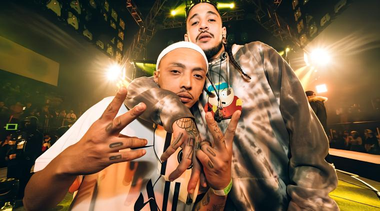

Doble porcion es un influyente grupo de rap colombiano de Medellin,fundado en 2012 por Julian Caña.(Mañanas Ru-fino). y Santiago Marin. (Metricas Frias).
Tras el fallecimiento de Metricas frias en 2022,Mañas Ru-Fino ha continuado con el legado del grupo. y su productor Soul AM tambien ha estado vinculado con el legado a la agrupacion.
Manzanas a la Vuelta (2015) Es uno de los trabajos más representativos del dúo de Medellín. Tiene un sonido clásico de boom bap, letras introspectivas y mucho contenido social y cotidiano.
CANCION PLAN PAL DESEMBALE

CACNCION : PLAN PAL DESEMBALE
Quieren cambiar mis costumbres y malos hábitos Mi cara fúnebre y ponerme la del niño del pesebre Otros esperan el quiebre son liebres con fiebre Su envidia hierve les arde el vientre aunque pelen los dientes Cuando saludan desnudan sus dudas con voz de judas No los ayuda ni el león de Juda, nua' Como crítica el que no suda Nada raro que en un tiempo en un concierto las manos me suban El RAP no me lucra, soy una lacra El sol se pone pero no me alumbra Voy por la sombra viendo las curvas Cuellos se doblan Sellos estorban con su murga, de su mugre solo surge burlas No prometemos cambios y a cambio Vamos de labios en labios Como mal presagio pa' raperos sabios Que hablan de algo que nadie vio Que contaminan el medio que pa' rapear no les dio Hablo en serio El Mañas y el Sanix Haciendo un plan pa'l desembale El rap de tu city así no sale Así no salen Doble porción en sus cuellos la boa Aun en el ring soportando más rounds que Rocky balboa No somos kings somos el Pedigree Del RAP de Medellín sale la rima nueva y esta trama está sin fin Y llaman, pidan ayuda porque aquí no hay chamán Que le suba el maná No te las des de Jackie, ni de yankee, ni de junkie O sentirás el ki que emana, estos maestros del free, monkeys No es por money o por monas, es por ganas Te traiciona las hormonas Como en el convento a las hermanas (Que se las coma el cura) Unas buenas palabras abren las vaginas más duras (Y las más sanas) MBZ la crema en sus piedras la lama Preparando otra receta de letras con flema Que no se queman, pero sí son flamas La parte que no entienden de este pentagrama Es por los de mi misma rama, pana
TRABAJO DE *Jostin felipe mendoza caro 1105 *Melanie Sofia Quiroga Robayo: